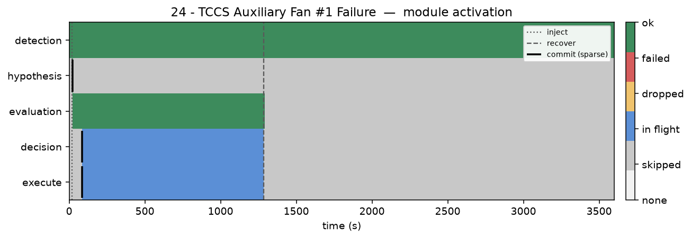

Scenario 24 · knowledge graph + cardinality fixed · P/T recovery · 60 s timed gate · procedure execute · 3600 s run
KG returns candidates (symptom overlap). Scores become Pi; catalog ETRs become Ti
Hold first pick for 60 s after first nonzero evaluation so early score mass can settle
P/T ranks Fan #1 Failure first (P=0.37, T=20 min) — true fault, first try
Auxiliary fan swap-out runs; experimenter accepts the required procedure
1 min window: alarms drop → success (TTR ≈ 21 min from injection)